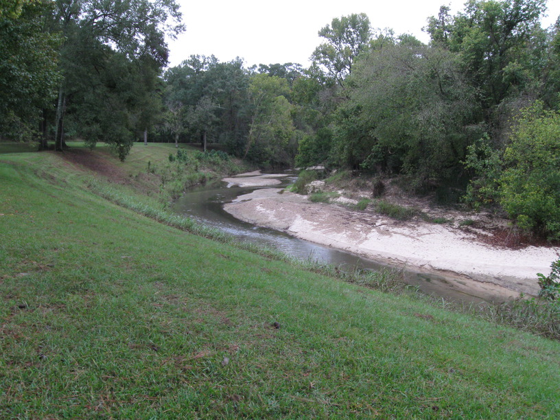
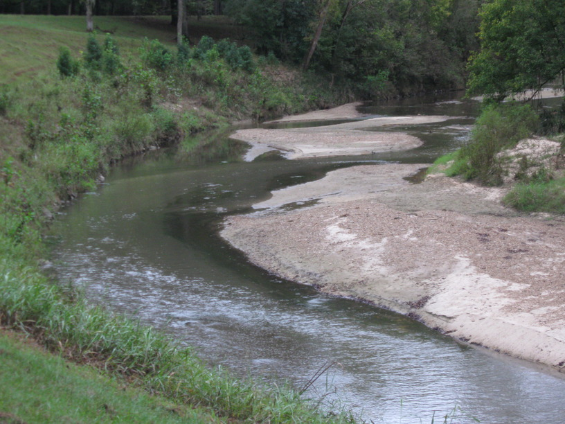

23 Oct 2008, Natchez, MS
Mole Day made up for the past few quiet days on the Trace. I had planned to get up early & get a lot of miles in. But I woke up in the middle of the night to the sound of rain, so I figured it wasn't worth the rush. As I did (slowly) pack up, a guy came by walking his dog & invited me to stop by his camper (once he moved it) to warm up, so once I had most of my gear ready to go, I headed over. He introduced himself as Lon, and proceeded to make me (& himself bacon, eggs & toast for breakfast. He lives out of his camper—at a private campground he's set up near Dallas during the winter & wherever during the summer—and he had tons of stories about how hospitable & kind people were (& are) to him in his travels. Of course, he was doing the same for me.
I headed off on my bike at 11:30—very late, but I figured I'd just ride the ~45 miles to Natchez State Park. Of course, after a long lunch stop (Subway had the heat turned way up :-)) & some time spent perusing the NT stops & sites, I found myself racing the sun to get to the campground before dark.
Then I came upon Eric. Eric is hiking the entire Trace, having started 3 months ago. I slowed down to talk with him a while (1.5 miles) & we swapped stories about our respective adventures. He's been stealth camping & has only slept under a roof once in all this time. With only one or two days left until Natchez, I wished him luck as he finished his journey (he was either going to buy a canoe & row back to New Orleans or take a bus) & started pounding on to make it to the park before it was completely dark.
It was pretty dark as I pulled in & I had to make a turn to go towards Campground B or go straight for Campground A. I opted for B, with a little Robert Frost in mind, and it was a good choice. I thought I saw a campground sign as I pulled in, but decided it was time to pull out the headlamp to make sure. As I was doing that, someone walked up (I just saw his headlamp coming towards me) & greeted me. He asked if I was touring; I said yes & he replied, "We are too."
"We" it turned out was Ben & Meg. They're from Philly, but have been touring down south for a few weeks. They started from Chattanooga (IIRC) & were heading for New Orleans. They invited me to join them for dinner, so they fed me too!
Anyway, it's been an eventful, long, short-day & we're planning to ride into Natchez first thing in the morning, so I've got to sleep.

